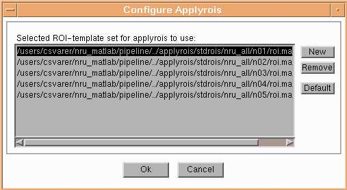

Atlas: ApplyRois
Run
Using this button the method will be applied to the dataset. The principle
is described in a PowerPoint presentation.
Short description of the method:
-
You have a number of template MR images with Volumes of Interest (VOI)
defined (included here is 5 templates with 37 VOI's defined)
-
These template MR's will be transferred to the subjects own MR using 12
parameters affine transformation and a warping algoritm
-
Using the identified transformation parameters the template VOI sets can
be transferred to the subject space
-
There is now a number of VOI sets available in subject space and by combining
these using a probability based approach variation can be reduced.
Options
It is here possible to select how many of the VOI sets shall be transferred.
5 VOI sets is delivered together with this software. These can be replaced
by you if you are interested in other volumes of interest, than the one
we have outlined. In general the more VOI sets that is transferred to new
subject space the more the variation is reduced, but the slower the algorithm.
Transferring one set of VOI's take approximately 4 minutes on a 2.7 GHz
pentium, so transformation of 5 sets of VOI's takes approx. 20 minutes.
It is recommended to leave in as many as possible (up to your patience)
of the template VOI sets.
The window that pups up when you select how many VOI sets to use is:

You have here the possibility to either deselected some of the VOI
sets selected (pressing "Remove") or select a set of new VOI's (pressing
"New"). Your own sets of VOI's can be used, each of the shal be placed
in a directory, and in each of these directories a file called T1.img,
T1.hdr (analyze file with T1 weighted MR image (same modality as the images
you have available for the new subjects). The skull have to be removed
from the MR's as the warping algorithm can not handle this information).
Further a file with VOI's shall be placed in the directory. This can either
be an analyze volume file or a "editroi" file (local NRU format).
Show
Using this buttom you get 7 images generated. These are:
-
Original PET image
-
MR image that have been resliced to PET space
-
Segmented MR image (GM, WM and CSF) in original MR resolution
-
MR image where skull have been removed
-
Displacement field for warping (see warping documentation)
-
Segmented MR image (GM, WM and CSF) resliced to PET space
-
MR image that have been resliced to PET space (same as #2)
-
Volume with VOI's defined, one value pr. VOI (atlas image)
-
Volume with VOI's defined, only GM voxels shown, rest set to 0
Details
This button opens an interface with information about all the files that
have been used as interface for the process, and the files that are generated.